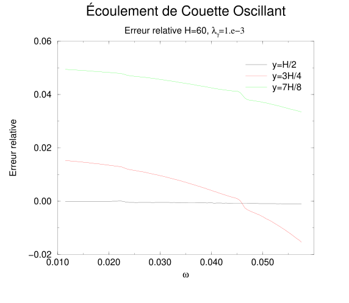
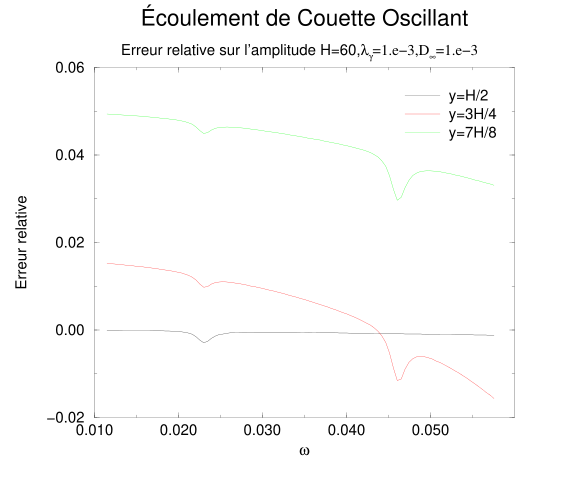

Part III · Modeling of Viscoelasticity with the Lattice Boltzmann Method — Chapter 5
Constitutive equation
The models presented have shown a certain ability to simulate a Jeffreys-type fluid, but we have no justification for this other than the results of the numerical experiments. The ideal situation would be to derive, from the various expansions, a constitutive equation for the fluid. However, neither the dispersion equation nor the Chapman-Enskog expansion in the viscous and quasi-elastic cases allows us to exhibit one. Nevertheless, the beginning of a derivation can be proposed in the form of a modification of the Chapman-Enskog expansion. Without claiming to be a rigorous derivation, this method will allow us to extract a constitutive law for our fluid.
5.1 Promotions in the Chapman-Enskog expansion
Let us take up again the Chapman-Enskog expansions of the eleven-velocity model in order to limit the number of equations to write. Our aim is not to treat this model in particular, but to give a methodology independent of the models chosen.
The whole technique of the Chapman-Enskog expansion is based on the fact that each mode can be decomposed into a part at equilibrium, plus deviations around this equilibrium taken at second order, then at third order, etc... This expansion thus applies when the modes are near equilibrium. However, if the relaxation time of a mode is long, this mode will always be very far from its equilibrium value. That is why the Chapman-Enskog expansion is no longer valid for treating the fluids considered here. We will nevertheless propose a variant of the Chapman-Enskog expansion that will give us an idea of what the behavior of the modes, and therefore of the fluid, could be when one or several relaxation times are long but finite.
Let us take up the construction of the Chapman-Enskog expansion that we had carried out in chapter 3 of the first part, from the start. We had taken a Taylor expansion to second order of the evolution equation of our fluid: \[N_i(\vec{r}+\vec{c}_i,t+1)=N_i(\vec{r},t)-\sum_{j=0}^{b}{\Omega_{ij}\,\left( N_j-N_j^{(eq)}\right)},\] where we have now changed the quantity \(N_j^{(0)}\) to \(N_j^{(eq)}\) because we are going to distinguish them in the rest of this calculation.
The Taylor expansion thus leads us to the following expression in matrix form: \[\begin{equation} \label{NewTaylor} \partial_t{\mathbf{N}}\,+\,{\mathbf{S}}_{\alpha} \partial_\alpha{\mathbf{N}}\,+\,{\mathbf{S}}_{\alpha} \,\partial_\alpha\partial_t{\mathbf{N}} \,+\,{1 \over 2} \left( \partial_t^2 {\mathbf{N}}\,+\,{\mathbf{S}}_{\alpha}{\mathbf{S}}_{\beta}\,\partial_{\alpha\beta}^2 {\mathbf{N}}\right)= -\Omega\,\left( {\mathbf{N}}-{\mathbf{N}}^{(eq)}\right). \end{equation}\]
The Chapman-Enskog expansion proper is based on the introduction of several time scales as well as an expansion of the populations \({\mathbf{N}}\) around a value \({\mathbf{N}}^{(0)}\), which we identified with the equilibrium value \({\mathbf{N}}^{(eq)}\): \[\begin{equation} \left\{ \begin{array}{l} {\mathbf{N}}={\mathbf{N}}^{(0)}+\epsilon\,{\mathbf{N}}^{(1)}+\epsilon^2\,{\mathbf{N}}^{(2)}+\cdots, \\ \partial_t=\epsilon\,\partial_{t_1}+\epsilon^2\,\partial_{t_2}+\cdots,\\ \partial_\alpha=\epsilon\,\partial_{\alpha '}. \end{array} \right. \end{equation}\]
To this expansion, and since we now have eigenvalues of different orders of magnitude, we will add a separation of their contributions in the linearized collision matrix \(\Omega\) by: \[\begin{equation} \Omega=\Omega^{(0)}+\epsilon\,\Omega^{(1)}+\epsilon^2\,\Omega^{(2)}+\cdots. \end{equation}\]
By reinjecting these definitions in equation (5.1), and separating the different orders, we obtain, at first order, \(\epsilon\) then \(\epsilon^2\): \[\begin{eqnarray} &&\hspace{-0.5in}\Omega^{(0)}\,\left({\mathbf{N}}^{(0)}-{\mathbf{N}}^{{\mathrm{eq}}}\right)=0,\\ &&\hspace{-0.5in}\label{NewOne}\partial_{t_1}{\mathbf{N}}^{(0)}\,+\,{\mathbf{S}}_{\alpha} \,\partial_{\alpha'}{\mathbf{N}}^{(0)}=-\Omega^{(0)}{\mathbf{N}}^{(1)}\,-\,\Omega^{(1)}\,\left({\mathbf{N}}^{(0)}-{\mathbf{N}}^{{\mathrm{eq}}}\right),\\ &&\hspace{-0.5in}\partial_{t_2}{\mathbf{N}}^{(0)}\,+\,\left({\mathbf{\mathcal{I}}}-{\Omega^{(0)}\over 2} \right)\,\partial_{t_1}{\mathbf{N}}^{(1)}\,+\,{\mathbf{S}}_{\alpha} \,\left({\mathbf{\mathcal{I}}}-{\Omega^{(0)}\over 2} \right)\,\partial_{\alpha'}{\mathbf{N}}^{(1)}\,-{\Omega^{(1)} \over 2}\,\partial_{t_1}\,\left({\mathbf{N}}^{(0)}-{\mathbf{N}}^{{\mathrm{eq}}}\right)\,-\nonumber\\ &&\hspace{-0.5in}\label{NewTwo}\phantom{\partial_{t_2}{\mathbf{N}}^{(0)}\,+}\,{{\mathbf{S}}_{\alpha}\,\Omega^{(1)}\over 2}\,\partial_{\alpha'}\left({\mathbf{N}}^{(0)}-{\mathbf{N}}^{{\mathrm{eq}}}\right)=-\Omega^{(0)}\,{\mathbf{N}}^{(2)}\,-\,\Omega^{(1)}\,{\mathbf{N}}^{(1)}\,-\,\Omega^{(2)}\,\left({\mathbf{N}}^{(0)}-{\mathbf{N}}^{{\mathrm{eq}}}\right). \end{eqnarray}\]
Now let us gather the different terms by multiplying equation (5.5) by \(\epsilon\) and adding it to equation (5.6) multiplied by \(\epsilon^2\); after some manipulations, we obtain the generic equation: \[\begin{equation} \partial_t{\mathbf{N}}\,+\,{\mathbf{S}}_{\alpha}\,\partial_\alpha{\mathbf{N}}\,-\,\frac{1}{2}\Bigl(\,\Omega\,\partial_t\left({\mathbf{N}}-{\mathbf{N}}^{{\mathrm{eq}}} \right)\,+\,{\mathbf{S}}_{\alpha}\, \Omega \,\partial_\alpha\left({\mathbf{N}}-{\mathbf{N}}^{{\mathrm{eq}}} \right)\,+ \Omega\, \left({\mathbf{N}}-{\mathbf{N}}^{{\mathrm{eq}}}\right) \Bigr)=0. \end{equation}\]
We can then write this last equation in the basis of the eigenvectors of the collision matrix, and taking up the notations of chapter 3 of the first part, we obtain: \[\begin{eqnarray} &&\partial_t{\widehat{\mathbf{N}}}\,+\,{\mathbf{\widehat S}}_{\alpha}\,\partial_\alpha{\widehat{\mathbf{N}}}\,-\,\frac{1}{2}\Bigl(\,{\widehat \Omega}\,\partial_t\left({\widehat{\mathbf{N}}}-{\widehat{\mathbf{N}}}^{{\mathrm{eq}}} \right)\,+\nonumber\\ && \label{NewCE}\phantom{\partial_t{\widehat{\mathbf{N}}}\,+} \,{\mathbf{\widehat S}}_{\alpha}\, {\widehat \Omega}\,\partial_\alpha\left({\widehat{\mathbf{N}}}-{\widehat{\mathbf{N}}}^{{\mathrm{eq}}} \right)\,+ {\widehat \Omega}\, \left({\widehat{\mathbf{N}}}-{\widehat{\mathbf{N}}}^{{\mathrm{eq}}}\right) \Bigr)=0. \end{eqnarray}\]
Three distinct cases then arise: The first case concerns the conserved quantities \({\widehat N}_k\) with \(k\in{\mathcal{C}}\), for which we choose: \[\begin{equation} {\widehat N}_k^{(eq)}={\widehat N}_k, \end{equation}\] we then notice that the eigenvalues associated with these modes no longer play any role.
The second case concerns the quasi-conserved modes, \({\widehat N}_l\) with \(l\in{\mathcal{Q}}\), for which we take: \[\begin{equation} {\widehat N}_l^{(eq)}=0, \end{equation}\] the eigenvalues associated with these modes being of order \(\epsilon\).
The last case groups together all the other modes, \({\widehat N}_m\) with \(l\in{\mathcal{R}}\), for which the equilibrium quantity will be a function, to be determined, of the conserved quantities of the model. The equations issued from (5.8) for the indices \(l\in{\mathcal{R}}\) are then identical to those given by the classical Chapman-Enskog expansion.
If such an expansion is applied to the eleven-velocity model, we obtain, for the three conserved quantities \((\rho,j_x,j_y)\) and for the two quasi-conserved quantities \((H_{xx},H_{xy})\), using the same notations as for the Chapman-Enskog expansion: \[\begin{eqnarray} &&\hspace{-0.5in}\partial_t\rho\,+\,\partial_xj_x+\partial_yj_y=0,\nonumber\\ &&\hspace{-0.5in}\partial_tj_x+\partial_x\,(c_s^2\rho)+c_{\perp}^2\,\left(1-\frac{\lambda_\gamma}{2} \right)\left( \partial_xH_{xx}+\partial_yH_{xy}\right)+(1-4\,c_{\perp}^2)\,\partial_xS_{xx}^{(eq)}+\nonumber\\ &&\hspace{-0.5in}\phantom{\partial_tj_x+}(1-2\,c_{\perp}^2)\,\partial_y S_{xy}^{(eq)}+\left(1-\frac{\lambda_e}{2} \right)\partial_x\,e^{(neq)}+\nonumber\\ &&\hspace{-0.5in}\phantom{\partial_tj_x+}(1-4\,c_{\perp}^2)\,\left(1-\frac{\lambda_\nu}{2} \right)\partial_x\,S_{xx}^{(neq)}+(1-2\,c_{\perp}^2)\,\left(1-\frac{\lambda'_\nu}{2} \right)\partial_y\,S_{xy}^{(neq)}=0,\nonumber\\ &&\hspace{-0.5in}\partial_tj_y+\partial_y\,(c_s^2\rho)+c_{\perp}^2\,\left(1-\frac{\lambda_\gamma}{2} \right)\left( \partial_xH_{xy}-\partial_yH_{xx}\right)-(1-4\,c_{\perp}^2)\,\partial_yS_{xx}^{(eq)}+\\ &&\hspace{-0.5in}\phantom{\partial_tj_x+}(1-2\,c_{\perp}^2)\,\partial_x S_{xy}^{(eq)}+\left(1-\frac{\lambda_e}{2} \right)\partial_y\,e^{(neq)}-\nonumber\\ &&\hspace{-0.5in}\phantom{\partial_tj_x+}(1-4\,c_{\perp}^2)\,\left(1-\frac{\lambda_\nu}{2} \right)\partial_y\,S_{xx}^{(neq)}+(1-2\,c_{\perp}^2)\,\left(1-\frac{\lambda'_\nu}{2} \right)\partial_x\,S_{xy}^{(neq)}=0,\nonumber\\ &&\hspace{-0.5in}\left(1-\frac{\lambda_\gamma}{2}\right)\partial_tH_{xx}+\lambda_\gamma H_{xx}+\frac{2}{3}(1-q)\left( \partial_xj_x-\partial_yj_y\right)-\frac{2}{3}\left(1-\frac{\lambda_\chi}{2} \right)\left(\partial_xq_x^{(neq)}-\partial_yq_y^{(neq)} \right)=0,\nonumber\\ &&\hspace{-0.5in}\left(1-\frac{\lambda_\gamma}{2}\right)\partial_tH_{xy}+\lambda_\gamma H_{xy}+\frac{2}{3}(2+q)\left( \partial_yj_x+\partial_xj_y\right)+\frac{2}{3}\left(1-\frac{\lambda_\chi}{2} \right)\left(\partial_yq_x^{(neq)}+\partial_xq_y^{(neq)} \right)=0,\nonumber \end{eqnarray}\] where \(N_l^{(neq)}=N_l-N_l^{(eq)}\), which may be reduced to the first term of its expansion to be consistent with the classical Chapman-Enskog expansion: \(N_l^{(neq)}=N_l^{(1)}\).
Let us set the following definition of the tensor \({\dot D}^*\): \[\begin{eqnarray} &&\rho\,{\dot D}^*_{xx}=\partial_xj_x-\partial_yj_y=\rho\,{\dot D}_{xx}-(\partial_xj_x+\partial_yj_y),\nonumber\\ &&\rho\,{\dot D}^*_{xy}=\partial_xj_y+\partial_yj_x=\rho\,{\dot D}_{xy}, \end{eqnarray}\] with \({ \dot{\mathbf{D}}}\) the strain rate tensor. This definition can be written independently of the space dimension \(d\) as: \[\begin{equation} \rho\,{ \dot{\mathbf{D}}}^*=\rho\,{\dot{\mathbf{D}}}-\frac{2}{d}\,{\mathbf{I}}\, \left(\nabla\cdot {\mathbf{j}} \right). \end{equation}\]
Under the incompressible fluid hypothesis, \(\partial_xj_x+\partial_yj_y=0\), we obtain directly the components of the strain rate tensor: \[\begin{eqnarray} &&\rho\,{\dot D}_{xx}=\partial_xj_x-\partial_yj_y=2\, \partial_xj_x,\nonumber\\ &&\rho\,{\dot D}_{xy}=\partial_xj_y+\partial_yj_x, \end{eqnarray}\] that is, \({\dot D}={\dot D}^*\).
Taking \(q=-1 /2\) and after some manipulations: \[\begin{eqnarray} && H_{xx}+\left(\frac{1}{\lambda_\gamma}-\frac{1}{2}\right)\,\partial_tH_{xx}+\rho\,\frac{1}{\lambda_\gamma}{\dot D}^*_{xx}- {D_\infty \over \lambda_\gamma}\,\Delta H_{xx}=0, \nonumber\\ && H_{xy}+\left(\frac{1}{\lambda_\gamma}-\frac{1}{2}\right)\,\partial_tH_{xy}+\rho\,\frac{1}{\lambda_\gamma}{\dot D}^*_{xy}- {D_\infty \over \lambda_\gamma} \,\Delta H_{xy}=0. \nonumber \end{eqnarray}\] In the case of an incompressible fluid, we will simply replace the tensor \({\dot D}^*\) by the tensor \({\dot D}\).
From the equations issued from the preceding expansion, one can determine the expressions of the components of the stress: \[\begin{eqnarray} \sigma_{xx}={2\,\nu_\infty}\lambda_\nu\,S^{(1)}_{xx}+ {c_{\perp}^2 }\left(1-{\lambda_\gamma\over 2} \right)\,H_{xx},\\ \sigma_{xy}={2\,\nu_\infty}\lambda'_\nu\,S^{(1)}_{xy}+ {c_{\perp}^2}\left(1-{\lambda_\gamma\over 2} \right)\,H_{xy}. \end{eqnarray}\] Coupling these equations with those we have just determined for the tensor \(H\), and also considering the expressions of the components \(S^{(1)}_{xx}\) and \(S^{(1)}_{xy}\) issued from the Chapman-Enskog expansion already performed, namely: \[\begin{eqnarray} S_{xx}^{(1)}&=&-{\rho \,\frac{1}{2\lambda_\nu}} {\dot D}^*_{xx},\\ S_{xy}^{(1)}&=&-{\rho \,\frac{1}{2\lambda'_\nu}} {\dot D}^*_{xy}, \end{eqnarray}\] we then obtain the constitutive equation of our fluid, which is here: \[\begin{equation} \label{comportLB} {\mathbf{\sigma}}+\left(\frac{1}{\lambda_\gamma}-\frac{1}{2}\right)\,\frac{\partial\,{\mathbf{\sigma}}} {\partial t} =-\rho\, \nu_0 \left({\dot{\mathbf{D}}}^*+\frac{\nu_\infty}{\nu_0} \,\left(\frac{1}{\lambda_\gamma}-\frac{1}{2}\right)\,\frac{\partial\, {\mathbf{\dot D}}^*}{\partial t} \right)\,+\,\frac{D_\infty}{\lambda_\gamma}\,\Delta {\mathbf{\sigma} }. \end{equation}\]
One notices that, apart from the Laplacian term, this constitutive equation is that of Jeffreys. It can be noted that this constitutive equation is independent of the model chosen.
5.2 Numerical Simulations
One is then entitled to wonder about the influence of the additional Laplacian term on the simulations we have carried out. Let us take up, for example, the oscillating Couette flow experiment. From the new constitutive equation, we can derive a new complex viscosity \(\nu^*\) of our fluid. Indeed, by taking up the calculations of chapter 1 of the first part, we now obtain: \[\begin{equation} \sigma (1+i\,\omega\,\tau_1)=-\rho\,\nu_0\,(1+i\,\omega\,\tau_2)\frac{\partial V_x}{\partial y}+ \frac{D_\infty}{\lambda_\gamma}\rho\,\nu^*\,\frac{\partial^3 V_x}{\partial y^3}, \end{equation}\] with \[\begin{equation} \tau_1=\left(\frac{1}{\lambda_\gamma}-\frac{1}{2}\right)\qquad\mbox{and }\quad \tau_2=\frac{\nu_\infty}{\nu_0} \, \left(\frac{1}{\lambda_\gamma}-\frac{1}{2}\right), \end{equation}\] still keeping the relation: \[\begin{equation} \frac{\partial^2 V_x}{\partial y^2}=k^2\,V_x,\qquad\mbox{with }\quad k^2=\frac{i\,\omega}{\nu^*}. \end{equation}\] One then easily obtains: \[\begin{equation} \sigma (1+i\,\omega\,\tau_1)=-\rho\,\nu_0\,(1+i\,\omega\,\tau_3)\frac{\partial V_x}{\partial y}, \end{equation}\] with \[\begin{equation} \tau_3=\frac{\nu_\infty+D_\infty}{\nu_0} \,\left(\frac{1}{\lambda_\gamma}-\frac{1}{2}\right), \end{equation}\] which corresponds to adding \(D_\infty\) to the infinite viscosity of the fluid. We can then compute again the relative error with respect to this new constitutive law for our numerical experiment, which gives us graph 5.1.

If we compare this error with the one we had found when we compared our fluid to a Jeffreys fluid, it is of course smaller. The difference is moreover all the more visible as the frequency is large. Indeed, in that case, the wave number \(k\) is large and the Laplacian term becomes large. The error is now mainly due to the presence of the boundary conditions, because the further we move from the center of the channel, the more the error grows. An analysis of the type carried out in chapter 4 of the first part is therefore necessary to reduce, or even cancel in some cases, these errors.
Unfortunately, the Laplacian term cannot be reduced to an additional term in the infinite viscosity for all flow cases. On the other hand, it is possible to choose \(D_\infty\sim\lambda_\gamma\) for all simulations. This choice has the effect of making the additional term in the Jeffreys constitutive law negligible. One must then remain vigilant as to the stability of the model, and one then finds relative errors with respect to a Jeffreys fluid of the same order of magnitude as in the previous case 5.2.

One can then observe that the error at resonance exists, but remains very small compared to the error due to the boundary conditions.
In conclusion, one can give the conservation equations as well as the equations that we may call quasi-conservation equations of our fluid in the following form: \[\begin{eqnarray} &&\hspace{-0.5in}\partial_t\rho\,+\,\partial_xj_x+\partial_yj_y=0,\nonumber\\ &&\hspace{-0.5in}\partial_tj_x+\partial_x\,(c_s^2\rho)+c_{\perp}^2\,\left(1-\frac{\lambda_\gamma}{2} \right)\left( \partial_x H_{xx}+\partial_yH_{xy}\right)=\nu_\infty\,\Delta j_x+\xi_\infty\,\partial_x\left(\partial_xj_x+\partial_yj_y \right)\nonumber\\ &&\hspace{-0.5in}\partial_tj_y+\partial_y\,(c_s^2\rho)+c_{\perp}^2\,\left(1-\frac{\lambda_\gamma}{2} \right)\left( \partial_xH_{xy}-\partial_yH_{xx}\right)=\nu_\infty\,\Delta j_y+\xi_\infty\,\partial_y\left(\partial_xj_x+\partial_yj_y \right)\nonumber\\ &&\hspace{-0.5in} H_{xx}+\left(\frac{1}{\lambda_\gamma}-\frac{1}{2}\right)\,\partial_tH_{xx}+\rho\,\frac{1}{\lambda_\gamma}{\dot D}_{xx}^*- {D_\infty \over \lambda_\gamma}\,\Delta H_{xx}=0, \nonumber\\ &&\hspace{-0.5in} H_{xy}+\left(\frac{1}{\lambda_\gamma}-\frac{1}{2}\right)\,\partial_tH_{xy}+\rho\,\frac{1}{\lambda_\gamma}{\dot D}_{xy}^*- {D_\infty \over \lambda_\gamma} \,\Delta H_{xy}=0. \nonumber \end{eqnarray}\] It can be noted that these equations are also valid for the fifteen-velocity model if one considers that the variables \(P_{xx}\) and \(P_{xy}\) are defined up to a multiplicative constant \(\kappa\); we then have: \[\begin{eqnarray} &&H_{xx}=\kappa\,P_{xx},\nonumber\\ &&H_{xy}=\kappa\,P_{xy}.\nonumber\\ \end{eqnarray}\] Finally, the constitutive equation of our fluid is very close to that of a Jeffreys fluid. Moreover, the additional Laplacian term of the stress can be made negligible compared to the other terms of the constitutive equation when one chooses \(D_\infty\ll 1\).